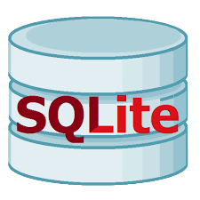
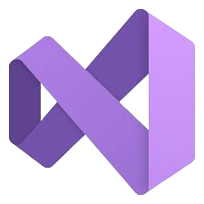

Hey! I'm
Bryce Cooper
I am a Full Stack Software Engineer, with a passion for crafting innovative and efficient code. With a keen eye for detail and a natural curiosity for emerging technologies, I consistently deliver high-quality software solutions that exceed client expectations.
I am a Full Stack Software Engineer, with a passion for crafting innovative and efficient code. With a keen eye for detail and a natural curiosity for emerging technologies, I consistently deliver high-quality software solutions that exceed client expectations.
Projects


Experience
Jan, 2023
CartoCrafter
Startup company that offers clients random map generations at the click of a button. Built specifically for a
TableTop RPG called Dungeons and Dragons. Random map generation is produced using TypeScript alogrithms and pre-loaded
data from the database.
More to come!
More to come!
Nov, 2022
BYU Sandbox Hackathon
Solely developed a MLA and APA format checker for students to gain entry in BYU's distinguished Sandbox
program. Built the front-end with React and JavaScript, hosted on an AWS Cloud9 server and an EC2 instance.
6 days of 60 hours were spent to complete development before introducing business idea in Hackathon presentations
of over 100 students.
As a result, my entire team was invited to join the Sanbox program: a startup incubator for students in teams of 2-4 for 2 semesters.
Currently, I am developing a React Native app with a user database in Firebase using OAuth for the service.
As a result, my entire team was invited to join the Sanbox program: a startup incubator for students in teams of 2-4 for 2 semesters.
Currently, I am developing a React Native app with a user database in Firebase using OAuth for the service.

April, 2021
GMetrix LLC
A software company that provides learning material for online courses and tests for over 100,000+ users
originally hired me as a Software QA Tester. During testing, I noticed that I didn't have to wait for developers
to fix bugs since I could do it myself.
Over the course of a year in the company, I developed invaluable experience from mentors and co-workers. I learned React, TypeScript, C#, ASP.Net, and Microsoft SQL to solve bugs and create features for production.
For 5 months, I was considered a Software Developer alongside QA responsibilities.
Over the course of a year in the company, I developed invaluable experience from mentors and co-workers. I learned React, TypeScript, C#, ASP.Net, and Microsoft SQL to solve bugs and create features for production.
For 5 months, I was considered a Software Developer alongside QA responsibilities.

My Skills
JavaScript
I use JS everyday and is my go-to Object-Oriented language. I love to use JavaScript for interactive behavior and then
building out the front and building NodeJS as the backend. I use JS in most of my web and mobile applications. My favorite
project using this is SimpliCite, making it my most interactive website yet!
React / React Native
If it's not JS, then I'm coding up a project in React or React Native. Simplifying code, creating reusable components,
and making a sleek architecture is only part of what I love to do with React. I use this with all of my front-end services.
Their sleek interactive hooks are to-die-for in all web apps.
C#
The OOP lang that I was introduced to at GMetrix LLC. Using C# is a gamechanger for my style of a type-safe language.
I used C# to code bug fixes and features while using their IDE in Visual Studio. The debugging, testing, and deploying
options inside the IDE were fun and easy to use.
CSS
I always use custom CSS styles to build my front-end apps. The capabilities of styling every aspect of interactable components
excites me. I expect the best customer experience from all of my cliens. I'm very comfortable coding in CSS and am taking online UI Experience courses to improve my designing skills.
Mongo DB
The most difficult yet intriguing NoSQL I've worked with so far in my career. I continue to bounce back and forth between
Mongo and Firebase because the difficulty of Mongo is much higher, but has far more applications like its local hosting
databases that I use every week. I am familiar with both the Mongo GUI, terminal, and web.
Java
I have multiple favorite OOP languages and Java is one of them. Using the Intellij IDE, I built my own android app with
a SQL Lite database. Java is my 2nd most experienced OOP and I've been coding with it every semester at BYU. Java got
me interested in programming in the first place!

SQL Lite
This is my foundation in every database service. I build SQL Lite db's with all of my android apps because SQL Lite is
the most simple SQL DB I've used in my life. This database introduced me to MySQL which I built for a small startup
company that stored data of dozens of gigabytes.
TypeScript
Officially my favorite OOP language. After I had coded in JS and Java for several years, I feel TypeScript has hit the
sweet spot in my coding game, officially making it my most exciting language to use. Currently, I am working on a TS project
and will revamp my JS code with the new best.
Python
I use python as I'm learning more about AI and machine learning tools. I use google colab to quick code algorithms
and AI scripts almost every day. I build Python GUI's for small desktop projects that I want to deploy.
Firebase
This nicely-designed NoSQL database takes my projects to the next level when it comes to db hosting. I use Firebase with
several projects especially when it comes to smaller data integration. I focus on using Firebase for small-medium size
database projects.
DynamoDB
I use the convenience and cheap route of hooking up Dyanamo DB's on a few of my Cloud9/EC2 servers since they are all AWS
hosts. I used this for the Best Travel project until I ended up switching to Mongo DB for personal preference.
MySQL
I built a database for a project that held up to dozens of gigabytes of non-user data. Another easy-to-use database that
I am familiar with and have used in past projects. Unlike SQL Lite, I see this as a better option for scalability and
performance for my future apps with a SQL database.
C
I have built tools such as shells, image editors, text editors, web servers, and other server-side servers with C. I made
a custom proxy server for a class at BYU. I have yet to make any new projects with C.
HTML
I am very familiar with all HTML tags and processes as I've scaled all of my published projects into dynamic
React pages with custom CSS styles. With changes to how html tags work with React and React Native, I continue
to learn new HTML tricks and formats every day.
Tech
AWS
Every project I deploy uses some form of AWS tech. I use Cloud9 to host a few of my project's code on
EC2 instances. I use Route53 for deployed projects and Github for deployment. I used DyanamoDB for testing
the database of a startup company. Currently, I find myself hungry, scouring over AWS Documentation for
hours every month.
Node JS
My most familiar server side code that I use for JavaScript and TypeScript environments. I develop server-side
API's with Mongoose and runtime calls with Axios all the time. NodeJS is my go-to event-driven architecture
with numerous libraries that I commonly use: Express.js, MongoDB, Axios, Passport.js, and Moment.js.
Git
I am an old school git terminal. I have used git IDE's in the past, but have found that the most reliable
and the most resuable will be the git commands that I will never forget. I use these every day.
Git Bash is a technology that I am very familiar with as well.
Github
When I go through my Github, I make a weekly plan of projects that I want to work on or finish up next.
I started used this at GMetrix and have grown to deeply appreciate Github as a tool for managing my projects
and collaborating with other engineers.

Visual Studio
Believe it or not, I love using Visual Studio. This IDE has been highly-valuable for certain applications
making coding seamlessly easy. I used this every day while coding at GMetrix with ASP.Net in C#. Less often,
I would use WebForms to update older content before was later replaced with React.
Docker
I am currently learning to use Docker as a Continous Integration and Deployment tool for catching and fixing
errors in my code early in the development cycle. The service is something I am testing as a tool for future
projects.
Android
With Java under my belt, I built a fully-fleshed android app from scratch with an SQL Lite database in Android
Studio. This is one of my favorite mobile projects that was made while at BYU.
Google Colab
I've started to use Google Colab to quickly code up an algorithm in python or use libraries that I am testing
and have yet to install on my device. I've most commonly used Colab to start my research on AI, Machine
Learning, and Deep Learning with Pytorch.
Selenium
I use Selenium as it was a big part of my Software QA Testing experience at GMetrix. The framework is
flexible, sometimes fidgety, but fun to use on all of my projects. I have used Test-Driven Development
with Selenium on front-end apps and found it resourceful.